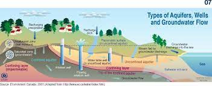
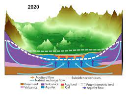

What is Hydrogeology and Why is Significant to the growing demand for geologists?
This field of Geology focuses on groundwater and its flow and accumilation. Hydrogeologists typically drill and pump into aquifers to obtain groundwater. Hydrogeologist are also responsible for monitering and helping to prevent soil and water contamination caused by oil drilling and waste disposal.
There has always been a need for hydrogeologist, however, these days we are seeing a need for them for more urgent reasons. Many aquifers become damaged or exhuasted mainly from over pumping. Mexico City is the best example of this as the city is located on top of a swamp that is now experiencing land subsidence causing the city to sink. Now more than ever, hydrogeologist are needed so we can find a way to combat this issue. *ANSWER THE QUIZ QUESTION BELOW*
